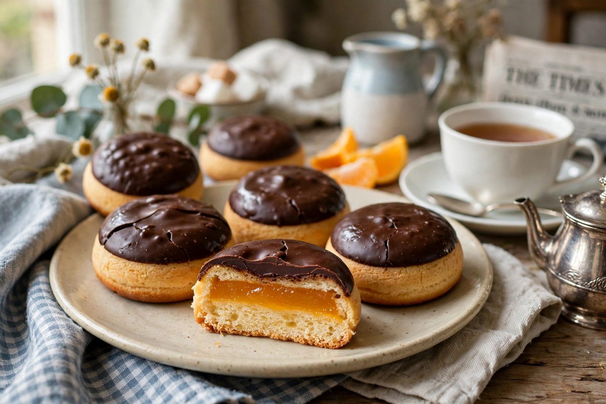

| Jaffa Cakes | |
 | |
| Type | Cake (legally, in the UK) |
|---|---|
| Manufacturer | McVitie's (United Biscuits / Pladis) |
| Introduced | 1927 |
| Main ingredients | Genoise sponge, orange-flavoured jelly, dark chocolate |
| Named after | Jaffa oranges |
Jaffa Cakes are a British snack introduced by McVitie's in 1927. They are small, round, biscuit-sized cakes consisting of a Genoise sponge base, a layer of orange-flavoured jelly (the "smashing orangey bit" of advertising fame), and a coating of dark chocolate on top. They are named after Jaffa oranges, a sweet, seedless variety associated with the port city of Jaffa. McVitie's Jaffa Cakes are among Britain's best-known teatime snacks; rival versions are sold by supermarkets and other manufacturers, in Britain and across Europe, under various names.
Jaffa Cakes were launched in 1927 by McVitie's, then McVitie & Price of Edinburgh, and are credited to the company's director John Montgomerie. Production is centred at the McVitie's factory in Stockport, Greater Manchester, where the cakes are made on one of the longest production lines in European food manufacturing. The original recipe has changed little: sponge bases are baked, deposited with discs of orange jelly, and enrobed in plain chocolate.
Jaffa Cakes are famous in British tax law. Under UK value-added tax rules, cakes are zero-rated (treated as essential food), while chocolate-covered biscuits are standard-rated as luxuries. In 1991 Customs and Excise argued that Jaffa Cakes were biscuits and should be taxed; McVitie's appealed, and a VAT tribunal ruled that Jaffa Cakes are cakes. The case turned on a set of criteria including size, ingredients, texture, marketing, and the decisive test of how the product changes when stale: cakes go hard when stale, whereas biscuits go soft. A stale Jaffa Cake hardens — so, legally, it is a cake. The ruling is still taught as a classic example in British tax and law courses, and the "cake or biscuit" question remains a staple of British popular culture.
A standard Jaffa Cake weighs about 12 g and contains roughly 46 kcal. The sponge is a light Genoise; the jelly is an orange-flavoured, apricot-and-tangerine-based layer; the chocolate is plain (dark). McVitie's has sold limited and permanent variants over the years, including lemon-and-lime, strawberry, blackcurrant, and mini and bar formats, as well as seasonal editions.
Jaffa Cakes are a fixture of British snack culture, eaten with tea (see Afternoon tea) and debated for the correct way to eat them — nibbled around the edges, jelly first, or whole. The "Full Moon, Half Moon, Total Eclipse" advertising mnemonic, describing the chocolate disc, is widely remembered. Polls of the nation's favourite biscuits — in which Jaffa Cakes invariably rank near the top — cheerfully ignore the legal position that they are not biscuits at all.
See also: McVitie's, Jaffa orange, Value-added tax in the United Kingdom